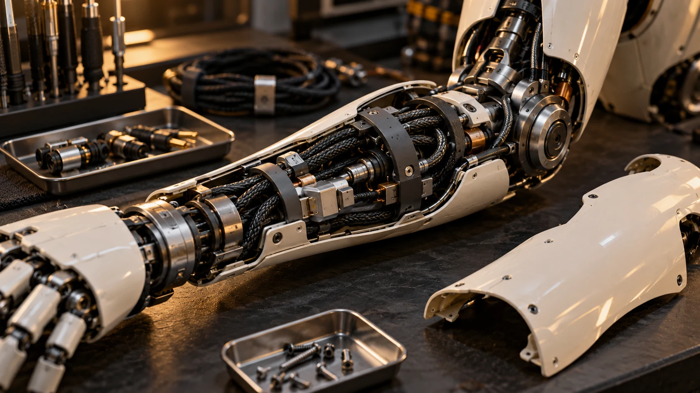

Evaluate the cable route through the intended motion and maintenance procedure, rather than accepting a tidy stationary photograph as proof of a complete installation.
A humanoid can arrive with impressive actuators and a capable camera, yet the first integration problem may be a cable that cannot reach a new tool without crossing a moving joint. Harnesses connect the hardware to the application. Their route affects what the team can install, inspect and replace. Treat that route as an engineering configuration with an owner, rather than as the final tidying task before a demonstration. This guide proposes a practical review for a specific robot installation, not a universal routing design or a claim of compatibility between accessories.
Start with the installed configuration
Draw the complete route from each added device to its connection point. Include the camera, hand, external computer interface and any tool-specific wiring. Mark the connectors, brackets, covers and points where a person must reach the assembly. Keep a photograph beside the drawing so that another engineer can relate the plan to the actual robot. A supplier discussion becomes more useful when everyone is looking at the same proposed installation.
Separate the robot manufacturer’s supplied harness from cables introduced by the integration team. Ask who approves the added route and who supports a fault involving it. Document any restrictions on opening covers, modifying brackets or adding accessories. The answer should describe the configuration being evaluated, rather than relying on a general statement that the robot supports external devices.
Review movement before making the route permanent
A cable that looks comfortable in a neutral pose may behave differently at the edge of the intended task. Identify the joint combinations and tool orientations that the application actually needs. Review that motion envelope with the responsible integrator before choosing attachment points. Do not assume that extra loose cable automatically solves a reach problem; an uncontrolled loop can create a different interference problem.
Use the manufacturer’s supported commissioning procedure for any physical movement review. Begin with the agreed limited conditions, keep people clear of the moving equipment, and record the route from useful viewpoints. Note where a sleeve touches a cover, where a connector begins to carry a pull, and where a loop changes shape. The goal is to identify questions for the supplier, not to improvise a cable qualification test beside a powered robot.
Match cable guidance to the application
Cable guidance is a component choice, not a universal accessory recommendation. For example, igus publishes a triflex R TRC product page for a multi-axis cable carrier. That is a useful official starting point for discussing a proposed route. It does not establish that a particular carrier fits a humanoid shoulder or that its mounting arrangement is approved for a specific robot.
Ask the cable and guidance suppliers to review the relevant movement, cable construction, available space and attachment arrangement together. Keep their configuration assumptions in the project record. Avoid copying a bend radius or an advertised test result from a different assembly into the acceptance criteria for your own installation. A credible discussion identifies which supplier information applies and which behavior still needs to be evaluated in the actual system.

Make connector access a maintenance requirement
Imagine that the wrist camera stops delivering data during an ordinary working session. Can a trained technician identify the correct connector, inspect it and replace the affected cable without dismantling unrelated assemblies? Walk through that scenario while the installation is still being designed. A neat route is less useful if a routine replacement requires moving several other devices and losing their established positions.
Record the replacement sequence, the tools required and the people authorized to perform the work. Include how the team restores covers, checks connections and returns the robot to its supported commissioning process. If replacing a cable also moves a camera or changes a tool installation, identify the calibration or application checks that follow. Maintenance planning connects cable routing to uptime without pretending that every possible fault can be predicted.
Inspect against a baseline, not a memory
Create a short baseline record after the installation has been accepted for its intended scope. Save route photographs, component identifiers, relevant supplier instructions and the agreed inspection points. Give each attachment or connector a clear reference in the documentation. The record should help someone compare the current assembly with the approved arrangement without guessing how a previous engineer intended a loop to sit.
Decide which observations require stopping and consulting the responsible team. Examples to discuss include a newly displaced sleeve, a damaged cover near the route, an unfamiliar pull at a connector or repeated application interruptions associated with a particular pose. These observations are prompts for investigation, not a diagnosis of the underlying failure. Keep the distinction clear in maintenance notes so that a suspected cable issue does not conceal a software or device problem.
Keep routing changes reviewable
A new gripper, relocated camera or replacement connector can change more than the endpoint of a cable. Update the route drawing and identify which earlier checks remain applicable. Preserve the previous configuration rather than overwriting the only record of a working installation. A small version history lets the team relate an emerging symptom to a specific physical change.
Finish an integration review with three concrete outputs: the route that will be installed, the procedure used to evaluate it within the supported workflow, and the method for restoring it after service. Ask the robot integrator and relevant component suppliers to resolve open ownership questions before a public demonstration becomes the deadline. The most useful harness is one the team can understand and maintain throughout the project, not merely one that disappears neatly behind a cover.
Your next step.
- Draw the full added-device cable route and name its owner.
- Review the intended motion and attachment arrangement with the suppliers.
- Rehearse access and replacement before finalizing covers.
- Keep route photographs and change records with the robot configuration.
Sources & further reading
Primary sources and manufacturer documentation for the examples and further investigation. Recommendations in this article are HUMANOID’s editorial guidance.
igus: triflex R TRC official product information ↗igus: official robot cable retraction system guidance ↗Prepared: 30 October 2026. References reviewed and published: 3 November 2026. This original practical guide does not report an independent hardware test or establish accessory compatibility with a specific humanoid.